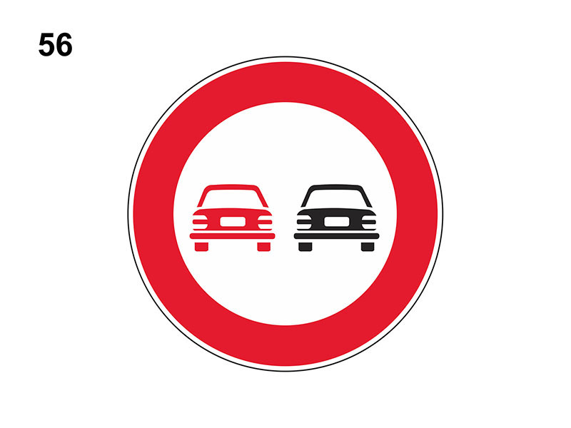

Divieto di sorpasso

E' un segnale di divieto e vieta a tutti i veicoli di sorpassare i veicoli a motore (anche elettrico), eccetto i ciclomotori e i motocicli.
In presenza del segnali possono venire sorpassati:
Attenzione il divieto di sorpasso vale per tutti i veicoli a motore, anche per ciclomotori e motocicli.
Vale anche se la manovra può compiersi entro la semicarreggiata, senza oltrepassare la striscia continua.
Ha validità 24 ore e si può trovare sia su strade urbane che extraurbane.
Può essere integrato dal pannello integrativo 'CONTINUA', ad esempio dopo un incrocio, ad indicare la continuazione del divieto.
In presenza del segnali possono venire sorpassati:
- veicoli senza motore
- biciclette
- veicoli a braccia
- carrozze a cavalli
- veicoli a trazione animale
- ciclomotori
- motocicli
Attenzione il divieto di sorpasso vale per tutti i veicoli a motore, anche per ciclomotori e motocicli.
Vale anche se la manovra può compiersi entro la semicarreggiata, senza oltrepassare la striscia continua.
Ha validità 24 ore e si può trovare sia su strade urbane che extraurbane.
Può essere integrato dal pannello integrativo 'CONTINUA', ad esempio dopo un incrocio, ad indicare la continuazione del divieto.